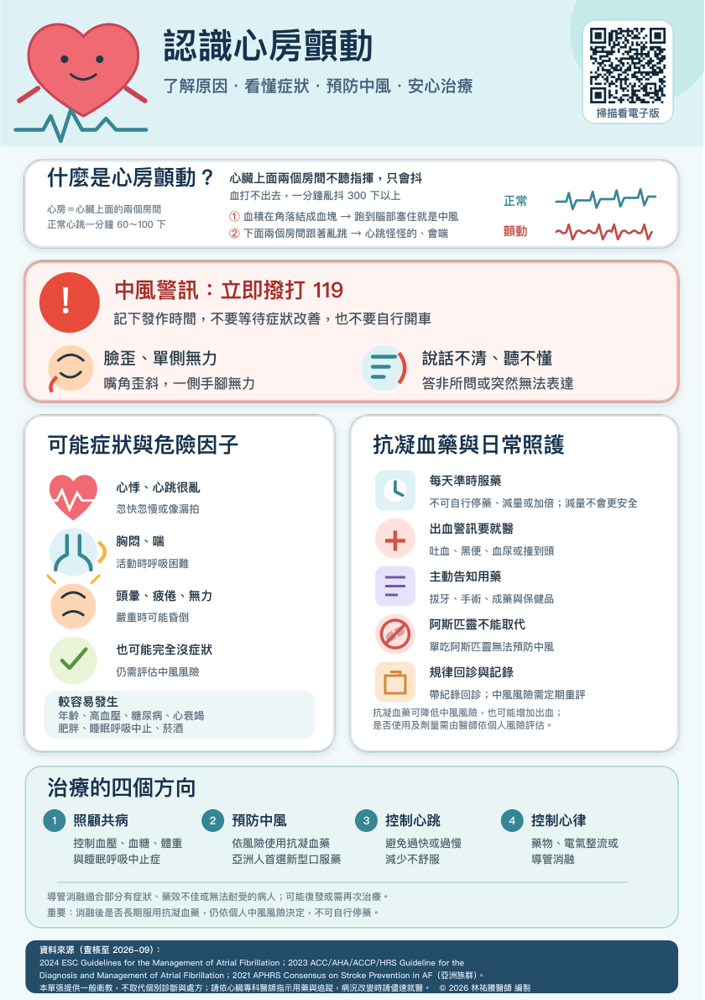

抗凝血藥與日常照護
尚未播放
查看原始衛教圖卡

原稿來源與說明
資料來源（查核至 2026-09）：
2024 ESC Guidelines for the Management of Atrial Fibrillation；2023 ACC/AHA/ACCP/HRS Guideline for the
Diagnosis and Management of Atrial Fibrillation；2021 APHRS Consensus on Stroke Prevention in AF（亞洲族群）。
本單張提供一般衛教，不取代個別診斷與處方；請依心臟專科醫師指示用藥與追蹤，病況改變時請儘速就醫。 © 2026 林祐賸醫師 編製